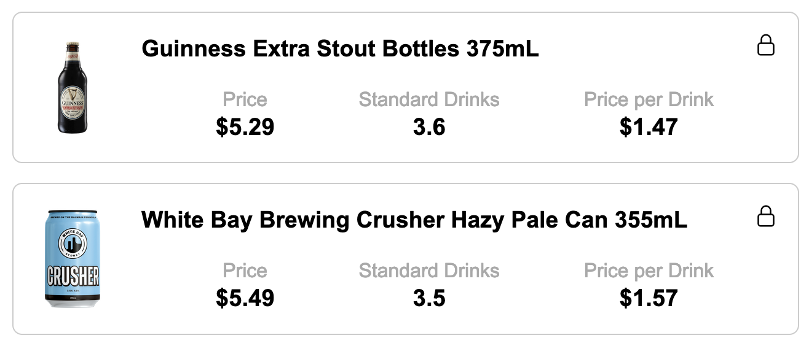
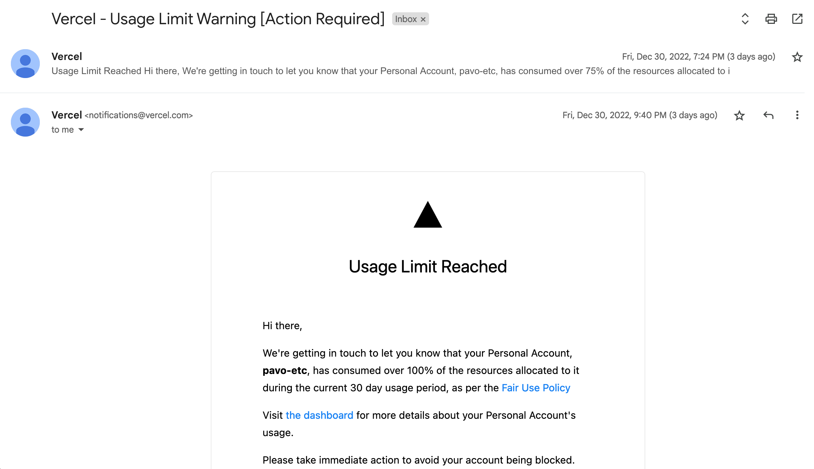

TLDR: If you are using Vercel and display a lot of images hosted on someone else's server, you probably want to turn off Image Optimisation.
Over the last week I built Alculator using Next.js and hosted on Vercel. The site uses data lovingly freebooted from the Dan Murphy's public API to rank products by the ratio of price to standard drinks, and displaying this data in a card.

The images for these cards are hosted on a Dan Murphy's server (media.danmurphys.com.au), and I am simply using Next.js <Image> tags to point to them.
...
<div className="card center">
<div
className="flex center-aligned"
onClick={() => (window.location.href = `https://www.danmurphys.com.au/product/${item.stockcode}`)}
>
<Image
alt="Image of drink"
height="100"
width="80"
src={`https://media.danmurphys.com.au/dmo/product/${item.stockcode}-1.png`}
/>
<div className="fill-width">
<div className="flex space-between align-center">
<h3>{item.name}</h3>
...
I'm using Vercel's free tier to serve the application which grants 100GB of bandwidth, which is magnitudes higher than any amount of users I expected to serve. I put the finishing touches on the site on December 30th, sent the link to a few people and went to the pub.
Over the next few hours I started receiving strongly worded alerts from Vercel:

Either I had gone viral or my code was a lot more inefficient than I thought. At 1AM I returned home, having reached the Ballmer Peak to diagnose the problem.
On the Vercel/Dashboard/Usage page, right at the bottom is the harmless looking graph titled "Image Optimisations" which turned out to be the culprit. By default, Vercel takes all images hosted in <Image> tags and caches them all at the Edge. Vercel had optimised 1400 of these images before I discovered this and at the free tier this is capped at 1000 images. Whoops.
The solution is simple:
next-config.js
/** @type {import('next').NextConfig} */
const nextConfig = {
reactStrictMode: true,
images: {
unoptimized: true,
},
};
module.exports = nextConfig;